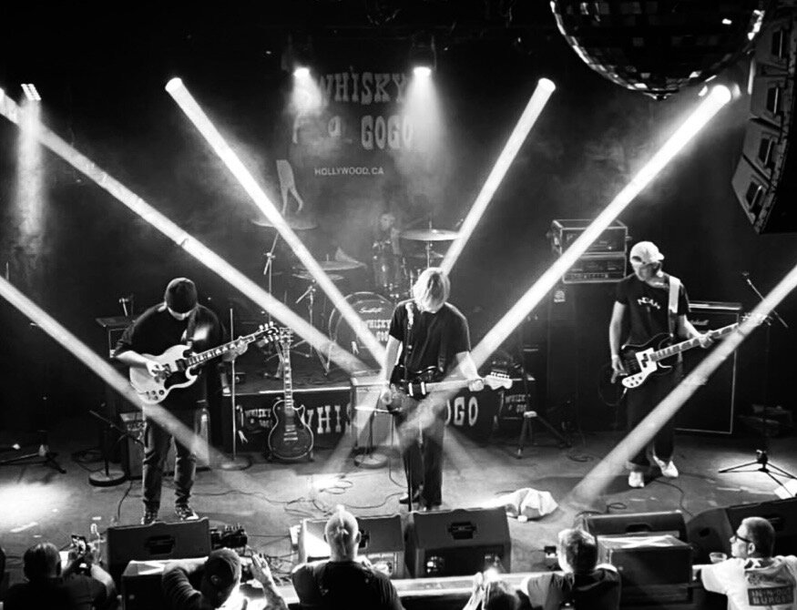
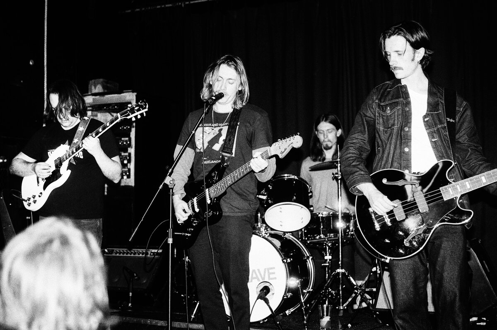
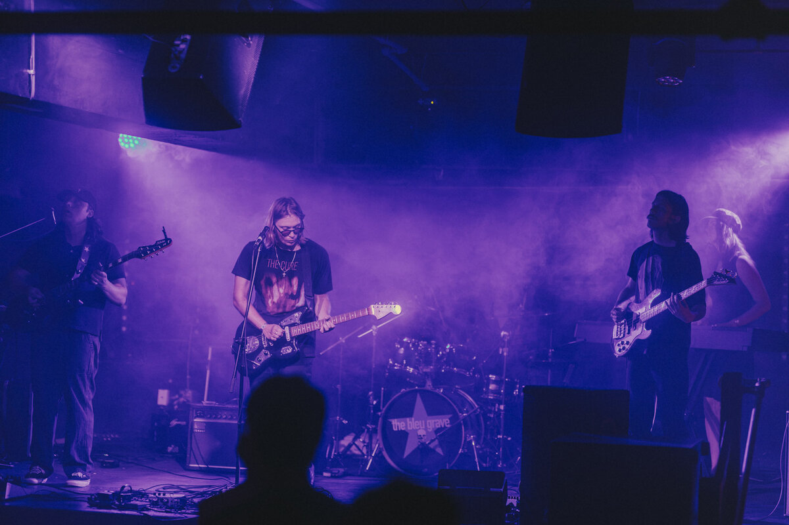

Bleu Grave
-

-

-

-

Bleu Grave is a Southern California post-punk band blending the dark atmosphere of goth with the hazy textures of shoegaze — a sound the band calls “goth-gaze.” Drawing inspiration from influential acts such as The Cure, New Order, Gary Numan, The Chameleons, Echo & the Bunnymen, The Psychedelic Furs, and Slowdive, Bleu Grave combines shimmering guitars, haunting melodies, driving rhythms, and a distinctly 1980s-inspired aesthetic into something entirely their own.
Founded by brothers Solomon Swensen and Smith Swensen, Bleu Grave began as a vision rooted in the darker side of alternative music and has grown into one of the emerging forces in the modern post-punk and goth-gaze scene. Solomon serves as the band’s frontman and rhythm guitarist, while Smith is the band’s lead guitarist, bringing atmospheric and melodic guitar work influenced by the greats of post-punk.
In 2026, Bleu Grave signed with Cleopatra Records, one of the largest and most established independent record labels in the United States. With a legendary history spanning punk, goth, new wave, and alternative music, Cleopatra’s roster and releases have included iconic artists such as Iggy and The Stooges, The Damned, Missing Persons, and Gary Numan. Bleu Grave now joins a label with deep roots in the very musical movements that helped shape their sound.
The band has also expanded into what they consider their strongest lineup to date, welcoming Jakob Hansen, Kendall Jamison, and Madeline Harris alongside founders Solomon and Smith Swensen.